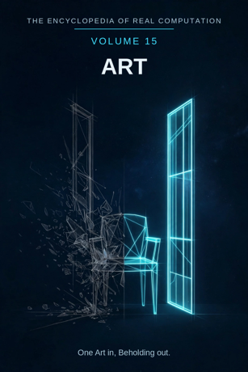

Chron.
The Encyclopedia of Real Computation

One Art in, Beholding out.
Home domain: Aesthetics
One Art in, Beholding out.
◉ A Principle .... Art ◎ B Purpose ...... Expression ◉·◉ A.A Alpha ...... the Artist ◉·◎ A.B Cross ...... the Impression △ X Primitive .... Marks ⚙ Y Protocol ..... Technique ⬢ Z Product ...... Artwork ◐ i State ........ Blank ⚖ j Condition .... Beheld ⊞ N Set .......... Studies ◷ h Time ......... Time ▣ C Context ...... the Studio ▦ D Domain ....... the Gallery ♥ E Emotion ...... Feeling ➤ F Intention .... Intention ↻ pi Cycle ........ Movements ➔ phi Step ......... the Stroke ⚄ e Probability .. Chance • h-bar Planck ..... the Instant
Σ sigma Summation .. the Body of Work
◈ gamma Scale ...... Scale Δ delta Change ..... Change ⁂ sigma' Options ... Styles Ω Omega Answer ..... Beholding
Every volume of this encyclopedia does the same work. The Prologue figures the subject whole. Then come twenty-four chapters, one per term, each doing four jobs in plain English: what the term means, where it sits in the computation, how it works on the volume's one running example, and what breaks without it. Then the Data, whole. Then the Crossings. Then the Sum. The running example of this volume is one drawing: a chair by a window, in charcoal, followed from the blank page to the wall where it is beheld.
Art: the making of marks, images, and objects aimed at expression. Expression: what is inner made outer, so that it can be beheld.
◉ Art. ◎ Expression = the root of Art: aimed at itself, art asks
what it has to show. ◉·◉ the Artist: art turned on itself becomes a person who makes it. ◉·◎ the Impression: art crossed with expression - what the crossing leaves in the beholder. △ Marks = Art parted over the Studies. ⚙ Technique = the function of the Marks, the working applied. ⬢ Artwork = Marks times Technique, the product. ◐ Blank = the root of negative Art: the untouched surface, and everything not drawn. ⚖ Beheld = the condition, element by element: art stands while it is beheld. ⊞ Studies = the set: Drawing, Painting, Sculpture, Ceramics, Printmaking, Photography, Film, Animation, Music, Dance, Theater, Architecture, Fashion, Textiles, Street Art, Digital Art. ◷ Time: art comes down through time. ▣ the Studio: where art stands while it is made. ▦ the Gallery = the Studies crossed by the Beholding.
♥ Feeling = the difference a showing makes. ➤ Intention = the
aim that carries a context. ↻ Movements: art returns to its old ground one level up. ➔ the Stroke: one step, made, stood on.
⚄ Chance: the odds a mark carries - the accident, kept or wiped. • the Instant: the least piece, the moment of seeing. Σ the Body
of Work: all of an artist's work, summed as one. ◈ Scale: the size at which a work is read. Δ Change: art's own measure of revision.
⁂ Styles: the spread of manners a work might take. Ω Beholding:
the answer art resolves into.
IF If Art to Expression, then Marks & Technique is Artwork, or Blank while Beheld for Studies, through Time, in the Studio, the Gallery, Feeling, Intention, at Movements by the Stroke, with Chance over the Instant - sum the Body of Work, scale Scale, change Change, options Styles - therefore Beholding.
Stands below, after the chapters, figured whole: the Studies crossed by the Study, sixty-four cells; the beholding matrix of the source figuring, one hundred twenty-eight crossings; and the six contexts.
The seven laws, run on this seed. Pythagoras: Art squared plus Expression squared is the diagonal squared - the Event stretched across the Gallery; at 1 and 1 the diagonal is root two, and the triangle checks in the Where, the If, and the Data identically. Law of cosines: the tilt between art and expression is set by context - in the studio the angle is private and steep, on the gallery wall it opens flat to strangers. Binomial: the middle term is the Impression, two times over - the maker crosses into the work, the work crosses into the beholder; the artwork lives in the cross term. AM-GM: Expression is the geometric mean between Art and the One - the mean proportional, the rooted reading of the crossing. Log law: Scale of the Artwork is Scale of the Marks plus Scale of the Technique - size adds where work multiplies. Complex modulus: the Blank is counted in the size of the work; a drawing is larger, not smaller, for everything it leaves out. Triangle inequality: no route from Marks to Artwork is shorter than Technique; skip it and you hold a copy of an intention, labelled as such in the last term but one.
Art begins with the plainest material there is - marks - and works them by technique into something that can leave the maker's hands. Its product is not the working but the artwork: an object that carries expression across a room and across years. The field is honest about its shadow: the blank is not its failure but its state, counted in every work's size, since a drawing is mostly what was left out and the light in it is usually the untouched paper. It is honest about its condition, too: art stands while beheld, and its whole domain is a map of the places beholding happens, from the page to the feed. Its history moves in movements, each generation re-drawing the chair by the window in a new manner and finding the old manners waiting in the spread of styles. And its finish is beholding - not the work praised or priced, but the work seen, by a stranger, in a lit room, with the impression landing as the maker crossed it to land. One Art in, Beholding out.
What it means. Art is making aimed at expression: marks, images, and objects arranged so that something inner - a feeling, a thought, a way of seeing - crosses to a beholder. It is the principle of this volume and the oldest of the two sister arts in the Aesthetics home.
Where it sits. Art is the seed every other term grows from: Expression is its root, the Artist its self-product, the Impression its cross. Everything else in the volume is art distributed, worked, placed, or resolved.
How it works. The drawing is art before the first mark lands. The charcoal is bought, the chair is set by the window, the light is waited for - all of that aiming is already the Principle at work. The marks, when they come, execute an art that was decided in the aiming.
What breaks without it. Without art as a principle, marks are only records - measurements, diagrams, evidence. Every other field borrows art's beholding: even the geometer's figure wants to be seen. Remove the Principle and the images remain, unmeant.
What it means. Expression is what art is for: the inner made outer. A feeling that stays inside one person is not yet expressed; expression is the carrying-across, so that what was private becomes beheld.
Where it sits. Expression is the Purpose, B = the square root of A: art aimed at itself extracts the demand to show, not just make. And B squared = A: expression fully achieved settles back into art itself - the work that says exactly what it meant is simply called art, and the purpose disappears into the principle.
How it works. The drawing does not express the chair's measurements; a tape measure does that better. It expresses the quiet of the room at four in the afternoon - the chair's mood, not its dimensions. That choice, mood over measure, is Expression steering every mark.
What breaks without it. Art without expression is decoration or data: competent, pleasant, and silent. Marks nobody meant are wallpaper with a signature.
What it means. The artist is art embodied: a person in whom the field's standards have become reflexes - what counts as finished, what is false, where the weak passage hides. The same fact in any field differs by its holder; in art the holder is visible in every stroke.
Where it sits. The Alpha, A times A: the field turned on itself. The artist is not art's employee but its self-product - art, practised long enough, produces the person who can practise it properly.
How it works. Hand the chair to a beginner and she draws the idea of a chair: four legs, a back, a seat, all symbols. Hand it to an artist and she draws the light pooling on one side and the dark gathering under the seat - the same chair, the same charcoal. The difference is not talent-talk. It is the holder: years of studies stand behind the second drawing and none behind the first.
What breaks without it. Unowned art is a pile of images nobody can extend: styles without artists repeat themselves, schools without masters grade into mannerism, and the body of work has no body to be the work of.
What it means. The impression is the interaction term: art crossed with expression, the residue the crossing leaves in the beholder. It is not a vague atmosphere. In this field's own proofs it is the cross term of the binomial, counted - the artwork lives in the cross term, not in either factor alone.
Where it sits. The Cross, A times B, counted twice: the maker crosses into the work (art shaping expression), and the work crosses into the beholder (expression reshaping the one who sees). Both directions are the same term.
How it works. Stand before the finished drawing and the room goes quiet in you - that hush, reported by everyone who stands there, is the Impression, and it was engineered: the dark under the chair was deepened precisely so the hush would land. The artist cannot feel it for you; the crossing happens in the beholder or nowhere.
What breaks without it. With either factor at zero - technique with nothing to say, or feeling with no craft to carry it - the product is zero and no impression forms. Artworks everyone admires and nobody remembers are cross-term failures.
What it means. Marks are the primitive material: a line, a tone, a smudge, a cut - one mark at a time, placed, combinable. A mark makes no claim by itself; it is the clay of the field. Art parted over its Studies arrives first as marks.
Where it sits. X = A times N: the Principle spread across the Set. Every study receives the principle as its own marks - the painter as strokes of colour, the sculptor as cuts, the photographer as exposures.
How it works. The drawing is, materially, nothing but charcoal marks: a dragged edge for the window light, a knuckle-smudge for the wall's tone, one unbroken line for the chair's back. Strip the meaning away in your mind and the marks remain, countable. Everything the volume claims is built from these.
What breaks without it. No primitives, no products: a field with nothing elementary to work has only finished wonders, and wonders cannot be taught, checked, or repaired.
What it means. Technique is what may be done to marks: hatching, blending, lifting, layering, masking. The list is public and teachable - which is the point. A protocol that cannot be handed on is not technique but biography.
Where it sits. Y = f(X), with f the root of Expression: the working is governed by the purpose. Strokes are chosen because they carry toward what the work has to say, not merely because the hand can make them.
How it works. The window's glare in the drawing is not drawn at all - it is the paper, protected while everything around it was darkened. That is technique as omission, the field's most advanced move: the brightest passage in the picture is a mark that was never made, arrived at by working everything else.
What breaks without it. Marks without technique stay accidents - a spill of charcoal with opinions. Technique is the field's hands; without them the marks cannot be aimed, repeated, or corrected.
What it means. An artwork is marks worked by technique and carried across the Impression into a finished thing: a product that can leave the studio, be hung, be beheld by strangers. It is art's load-bearing unit - the thing the field actually hands to the world.
Where it sits. Z = X times Y: the product, area-shaped - it has extent exactly as far as its factors reach, and it can always be factored back for audit: which marks, worked how, in what order.
How it works. The drawing, finished, is no longer a process but an object: signed, framed, portable. The hours of correction vanish into it, and what remains can be carried under one arm into a room the artist will never enter - which is exactly what a product is for.
What breaks without it. Working that never sets into a product is exercise, however beautiful. Studies prepare artworks; the field is judged, taught, and remembered by the works that arrived.
What it means. The blank is art's shadow: the untouched surface, and within a work, everything that was not drawn. It is not emptiness or failure. It is the state the principle stands in - the root of negative Art - and by the modulus law it is counted in the work's size.
Where it sits. i = the root of negative A: the shadow of art itself, not of any one work. Every artwork carries its blank the way the model carries every shadow: inside the figure, measured, never hidden.
How it works. The brightest thing in the drawing is its blank: the window light is bare paper, untouched from the first minute to the last. The whole technique of the piece exists to protect that blank and to darken everything else into relation with it. Remove the idea of the blank and the light goes with it - you cannot draw glare with charcoal; you can only leave it.
What breaks without it. A field that hid its blank would claim its works are all mark, all presence - and would be unable to explain where the light in any picture lives. Naming the shadow is what lets the field trust its highlights.
What it means. Beheld is the condition under which art stands: a work is fully art while it is beheld. This is not a snub to unseen work; it is the field's honesty about where its circuit closes. The condition is patrolled element by element - this work, this beholder, this standing-before.
Where it sits. j, the Condition: the root taken one element at a time. The grammar prints it plainly - Blank while Beheld for Studies. The condition is granular: a work beheld carelessly is held to a different account than a work beheld well.
How it works. In the drawer, the drawing is art in storage - complete, and waiting. On the wall, with a stranger slowing down in front of it, the condition is satisfied and the figure closes: marks, technique, impression, all live at once. The drawing did not change. Its standing did.
What breaks without it. Without the beholding condition, the field cannot distinguish a masterpiece from its own ashes in a burnt box - both are the same materials. Reception must be in the figure, or value is a rumour the field tells itself.
What it means. The studies are art's divisions, sixteen of them: Drawing, Painting, Sculpture, Ceramics, Printmaking, Photography, Film, Animation, Music, Dance, Theater, Architecture, Fashion, Textiles, Street Art, Digital Art. Each study is the whole principle practised in one material - and each names its own kind of studio.
Where it sits. N, the Set - the term everything is counted in: marks are A times N, the domain is N crossed by the Beholding, the sum runs over N. The set is complete as figured and open underneath; studies are still born - digital art arrived within living memory.
How it works. The drawing is one element - Drawing - standing among fifteen neighbours. Set the same chair before Painting and it comes back in colour; before Photography, in a fraction of a second; before Architecture, as a chair you could sit in, scaled up to a building's honesty. One motif, sixteen readings, no borders crossed illegally.
What breaks without it. Unsorted art is a warehouse of images: all moving, none findable, each generation re-learning what it cannot locate. The set is the promise that the field can find its own past.
What it means. Time is the passage art travels or dies in. A drawing is charcoal dust on paper - among the most fragile objects a field produces - yet drawings five centuries old are beheld this morning, because the field built carrying-technology around them: copying, framing, keeping.
Where it sits. h, Time: the term the whole figure moves through. Art's time differs from mathematics': its cargo rots, fades, and is restored. The field's memory is a discipline, not a property.
How it works. The drawing will outlive its afternoon only if it is carried: fixed, framed, photographed, hung out of the sun. Every one of those acts is Time being managed. Left in the drawer unprotected, the same drawing is a decade from a grey ghost of itself.
What breaks without it. Art that cannot persist is rumour: beheld once, described afterward, doubted within a generation. The field's whole apparatus of keeping exists because this term is load-bearing.
What it means. The studio is where art stands while it is made: its base context, the standing-place from which its domain is read. A studio is not neutral - its light, its size, its mess are in every work made in it, signed or not.
Where it sits. C, the Context, first of the setting terms: contexts transform the domain (the table stands in the Data), and the difference a context makes is measured by Feeling, two chapters on.
How it works. The drawing was made under a north-facing window, and the window in the drawing is that window - the studio's own light, borrowed and returned. Move the same artist to a basement with one bulb and the chair comes back harder, darker, smaller. The number of marks never changed; their company did.
What breaks without it. Context-free art is a fiction of catalogues. Works are made somewhere, and the somewhere is part of the work; a field that denied it could not explain why studios matter, or why artists fight for good ones.
What it means. The gallery is art's whole territory: the Studies crossed by the Beholding - every study in every space where art is actually beheld, from the Page to the Feed. One hundred twenty-eight crossings, figured whole in the Data. The domain is the map of where art can be met.
Where it sits. D = N crossed by R: the set by the real spaces of beholding. A study becomes territory only when beholding moves across it; the domain is a crossing, never a list.
How it works. The drawing holds addresses, plural: Drawing crossed with Gallery when it hangs in a show, Drawing crossed with Home when it leans over a couch, Drawing crossed with Page when it is printed in a book. Same marks, three crossings, three different meetings with the world - and the territory holds all of them at once.
What breaks without it. Works without a domain are unplaceable: made in a studio, praised in a sentence, and lost to view. The domain is the field's answer to the question every artwork asks on finishing: where do I go to be seen?
What it means. Feeling is the difference a showing makes, measured as this field measures it: the change in what a crossing means when the context moves. The source figuring works it cell by cell - a painting on the gallery wall carries Exposure, the same painting over a couch carries Comfort, the same painting in the feed carries Speed. Same work; three feelings; the difference is the term.
Where it sits. E, Emotion: the difference between contexts, C1 minus C0. Before the hanging, the work's meaning is a studio rumour; after it, the room has changed - and the size of the change is this term.
How it works. The drawing, photographed and posted, is beheld for one second by a thousand people: Speed. The same drawing, framed over the couch it depicts the chair from, is beheld daily for years by two people: Comfort. Neither beholding is the true one. The term simply refuses to pretend they are equal.
What breaks without it. Without a feeling term, every showing reads the same in the field's books, and hanging a work becomes superstition - sometimes the room sings and nobody can say why, or what was different.
What it means. Intention is the push: the aim that carries a work from the easel to the wall. The studio aimed at Expression becomes the Beholding - the work goes out. Intention does not edit the domain; it re-aims the whole context the domain lives in.
Where it sits. F, Intention: the operator that carries contexts - C1 = C0 + F. In this field the aim is specific: F points at B, at Expression. What survives the carrying is the work; what is shed is the work's privacy.
How it works. Framing the drawing is an act of this term. The artist could leave it in the flat file with forty others; the frame, the signature, the walk to the gallery are Intention made visible - the decision that this piece, of all pieces, goes out to be beheld.
What breaks without it. Without intention, work accumulates in studios and dies there, and the world sees only what leaks. Careers, shows, and movements are all this term, organised.
What it means. Art's history does not proceed in a line; it turns. Schools rise in reaction, exhaust themselves, and return as revivals one level up - drawing dismissed as mere preparation for painting, then enthroned as the most honest study of all. The movement is the field's gait at the largest scale.
Where it sits. pi, the Cycle: the loop the figure runs, turning by strokes. It is also the field's memory policy - old manners are not discarded but shelved in the spread of styles, ready for the turn that needs them.
How it works. The charcoal drawing stands in a long cycle: chiaroscuro in the Renaissance, drawing demoted by the age of oil, photography shaking every study in the set, and the present return - young artists filling sketchbooks their grandparents were told were old-fashioned. Four turns, one chair by one window.
What breaks without it. A linear art would learn each manner once and strand it there; taste would have no mechanism but fashion's jitter. The cycle is how styles teach their successors without being obeyed by them.
What it means. A stroke is one step: a single mark, laid down, that the work now stands on. Art climbs by strokes the way a proof climbs by lemmas - the step is a property of the climbing, not of the mountain. Nobody draws the whole drawing at once.
Where it sits. phi, the Step: the advance at the cycle's turn - the next context minus the now. Too small and the work drowns in fiddling; too large and the passage cannot be followed, and an unfollowable passage in a drawing is just a dark patch with ambitions.
How it works. One stroke decides the drawing: the deep dark laid under the chair in a single pass. Before it, a competent sketch; after it, a value structure - everything else in the piece is suddenly in relation. The cleverness of the work is stored in a handful of such strokes so the rest can be plain.
What breaks without it. Work described only as finished wholes cannot be taught: "be talented" is not a curriculum. The stroke is how the field hands its skill to strangers, one stride at a time.
What it means. Chance is the odds a mark carries: the drip, the smudge, the grain of the paper asserting itself. Art keeps this term honestly - the artist does not eliminate chance but edits its odds, loading some accidents and wiping others, the way a gambler who owns the dice shop behaves.
Where it sits. e, Probability: with Chance over the Instant - every point of a work carries its odds printed beside it, if you know how to look. The smudge that became the chair's shadow was probable; that it would be beautiful was the gamble.
How it works. Midway through the drawing, a sleeve drags the chair's edge into a soft blur. Wiped, the edge is correct and dead. Kept, the blur is the air of the room entering the picture. The artist's whole contribution at that moment was a probability judgement, made in one second, about an accident she did not order.
What breaks without it. Without a chance term, art is engineering: every effect planned, every surprise planed away, and the field unable to explain its own best moments - which were, embarrassingly often, accidents that somebody had the odds set right for.
What it means. The instant is the least piece of art: the moment of seeing in which a work is decided. Not the shortest time a hand can move, but the smallest unit the field's sums are taken over - the glance in which the chair, the window, and the light became one picture instead of three objects.
Where it sits. h-bar, the Planck term: the smallest resolution of the figure. Omega's limit is taken as the least piece shrinks: art's total is defined over instants - decisions, glances, contacts of hand and surface - all the way down.
How it works. Ask the artist when the drawing happened and she will not name the three hours. She will name a second: standing in the doorway at four o'clock, seeing the light cut the chair in half. The three hours were labour. The instant was the art arriving, and everything else in the volume is that instant, developed.
What breaks without it. No instant, no address for the decisive moment: the field would describe works as continuous labour and be unable to say where, in all that time, the picture actually occurred.
What it means. The body of work is an artist's output summed: not a pile of pieces but one body, read whole, in which the development is visible - the early manner, the crisis, the late simplification. The source figuring prints it plainly: the set summed reads +1, one body; the tally counts the pieces.
Where it sits. sigma, Summation: the total taken over the Set, whole, every study the artist has practised, none sampled. It is the inverse of the parting that made Marks - the field breathes out into works and in into bodies of work.
How it works. The drawing joins forty others in the flat file, and read together they stop being forty attempts and become one inquiry: light in rooms, pursued for a decade. A stranger can audit the sum - lay the works in date order and watch the hand learn. That auditability is the sum working.
What breaks without it. Unsummed art is a market of singles: prices without development, reputations without arcs, and no way to tell a major artist from a lucky one. The body of work is the field's long memory of a single holder.
What it means. Scale is the size at which a work is read - its dimensions, and with them its reach. A sketch whispers; a mural declares. Scale is a measure, not a ranking: the small true drawing outranks the enormous false one at every setting, and the field's miniaturists are not its minor artists.
Where it sits. gamma, Scale: the translator of the figure, gamma = the new context over the old. By the log law, the scale of a product is the sum of the scales - the artwork's presence equals the presence of its marks plus the presence of its working, which is why strong technique on plain marks commands rooms out of proportion to both.
How it works. Print the drawing at postcard size and it is a note to a friend. Print it wall-size - every charcoal grain a landscape - and it is a declaration the room must answer to. Same marks, same technique, two settings of one term, and two different works in every way except the audit trail.
What breaks without it. Read at one magnification, the field cannot tell its whispers from its proclamations, and hangs both with the same lighting budget. Scale is how curation thinks.
What it means. Change is art's revision term: the new aim minus the old, applied in full view of the whole. Old masters' paintings carry it visibly - pentimento, the earlier composition ghosting through where the artist changed his mind. Change is not the enemy of the finished work; it is the work's biography.
Where it sits. delta, Change: read in the closing run after the sum and the scale are known - revision done with the whole body of work in view, not in passing. In this field delta also names what happens between an artist's periods: the aim itself moves, and the movement is measurable against the body of work.
How it works. Under the drawing's final charcoal, the chair first stood at another angle - the artist turned it toward the window an hour in, and the turned legs still haunt the paper's tooth. The change was not an error corrected; it was the picture finding its subject. Both chairs are in the sum.
What breaks without it. Unchangeable art is printing, not making: the first thought eternal, the field's masters reduced to their first drafts. And a body of work that cannot change cannot develop - it can only accumulate.
What it means. Styles are art's open spread: the manners a work might take - realism, abstraction, the graphic line, the painterly blur - measured as a spread around the field's mean practice. They are printed in this volume as options, not results: the range of what the next work may be.
Where it sits. sigma-prime, the Options: last before the Answer, by the book's discipline. No answer in this encyclopedia is read until its spread has been shown; a work printed without its neighbouring styles looks more inevitable than it was.
How it works. Draw the chair six ways - measured, expressive, geometric, dissolved, cartooned, erased to a ghost - and you have six different answers to one motif, each auditing the others. The chosen drawing is one point in that spread. Knowing the spread is what makes the choice a choice, and the style a style instead of a habit.
What breaks without it. Hide the spread and the field presents its current manner as the only manner - a museum where a workshop should be. Styles are art's capital: the named shape of its next century.
What it means. Beholding is what art resolves into: the work, seen. Not praised, not priced, not explained - beheld, by a stranger, in a lit room, with the impression landing. It is the narrowest kind of answer and the field's whole point: every term in the volume exists to deliver one beholding that lands.
Where it sits. Omega, the Answer: the limit of the whole figure, and its door back - beholding shows the next blank page (Chapter 23 keeps the styles ready), the blank roots the next art. The volume closes where the field reopens.
How it works. A student stands before the drawing longer than she meant to, goes home, and picks up charcoal she has not touched in years. Nothing in the gallery recorded this. It is, by this volume's arithmetic, the drawing's complete success: the answer, arrived, already rooting the next principle.
What breaks without it. Without a resolution, the computation turns and never lands: marks made, technique perfected, bodies of work summed - and no point at which the field may say "this much was seen" and begin again. One Art in, Beholding out.
The Study runs in four movements: the MOTIF the study takes, the FINDING it establishes, the SEEING it reaches, the EXERCISE it hands on.
DRAWING ....... Motif: the Line - Finding: the Contour -
Seeing: Form - Exercise: the Sketchbook
PAINTING ...... Motif: Colour - Finding: the Harmony -
Seeing: Light - Exercise: the Weekly Canvas
SCULPTURE ..... Motif: Mass - Finding: the Balance -
Seeing: the Turn - Exercise: the Maquette
CERAMICS ...... Motif: the Clay - Finding: the Vessel -
Seeing: the Fire's Share - Exercise: the Kiln Load PRINTMAKING ... Motif: the Plate - Finding: the Impression - Seeing: the Reversed Image - Exercise: the Edition PHOTOGRAPHY ... Motif: the Moment - Finding: the Frame - Seeing: Exposure - Exercise: the Contact Sheet
FILM .......... Motif: the Shot - Finding: the Cut -
Seeing: Duration - Exercise: the Short
ANIMATION ..... Motif: the Frame - Finding: the Motion -
Seeing: Timing - Exercise: the Flipbook
MUSIC ......... Motif: the Note - Finding: the Melody -
Seeing: Harmony - Exercise: the Practice Hour
DANCE ......... Motif: the Body - Finding: the Phrase -
Seeing: the Floor's Geometry - Exercise: the Rehearsal
THEATER ....... Motif: the Scene - Finding: the Character -
Seeing: the Audience - Exercise: the Run-Through ARCHITECTURE .. Motif: Shelter - Finding: the Plan - Seeing: the Site - Exercise: the Model
FASHION ....... Motif: the Silhouette - Finding: the Fit -
Seeing: the Drape - Exercise: the Fitting
TEXTILES ...... Motif: the Thread - Finding: the Pattern -
Seeing: the Weave - Exercise: the Sampler
STREET ART .... Motif: the Wall - Finding: the Letter -
Seeing: the City - Exercise: the Blackbook DIGITAL ART ... Motif: the Pixel - Finding: the Render - Seeing: the Interface - Exercise: the Daily Render
The real side of this domain is the Beholding itself: the spaces where art is actually beheld, growing from the Page to the Feed. Each cell is one study, beheld in one space.
DRAWING ..... Drawing·Gallery - Drawing·Museum - Drawing·Stage -
Drawing·Screen - Drawing·Page - Drawing·Street - Drawing·Home - Drawing·Feed
PAINTING .... Painting·Gallery - Painting·Museum - Painting·Stage -
Painting·Screen - Painting·Page - Painting·Street - Painting·Home - Painting·Feed SCULPTURE ... Sculpture·Gallery - Sculpture·Museum - Sculpture·Stage - Sculpture·Screen - Sculpture·Page - Sculpture·Street - Sculpture·Home - Sculpture·Feed
CERAMICS .... Ceramics·Gallery - Ceramics·Museum - Ceramics·Stage -
Ceramics·Screen - Ceramics·Page - Ceramics·Street - Ceramics·Home - Ceramics·Feed PRINTMAKING . Printmaking·Gallery - Printmaking·Museum - Printmaking·Stage - Printmaking·Screen - Printmaking·Page - Printmaking·Street - Printmaking·Home - Printmaking·Feed PHOTOGRAPHY Photography·Gallery - Photography·Museum - Photography·Stage - Photography·Screen - Photography·Page - Photography·Street - Photography·Home - Photography·Feed
FILM ........ Film·Gallery - Film·Museum - Film·Stage -
Film·Screen - Film·Page - Film·Street - Film·Home - Film·Feed ANIMATION ... Animation·Gallery - Animation·Museum - Animation·Stage - Animation·Screen - Animation·Page - Animation·Street - Animation·Home - Animation·Feed
MUSIC ....... Music·Gallery - Music·Museum - Music·Stage -
Music·Screen - Music·Page - Music·Street - Music·Home - Music·Feed
DANCE ....... Dance·Gallery - Dance·Museum - Dance·Stage -
Dance·Screen - Dance·Page - Dance·Street - Dance·Home - Dance·Feed
THEATER ..... Theater·Gallery - Theater·Museum - Theater·Stage -
Theater·Screen - Theater·Page - Theater·Street - Theater·Home - Theater·Feed ARCHITECTURE Architecture·Gallery - Architecture·Museum - Architecture·Stage - Architecture·Screen - Architecture·Page - Architecture·Street - Architecture·Home - Architecture·Feed
FASHION ..... Fashion·Gallery - Fashion·Museum - Fashion·Stage -
Fashion·Screen - Fashion·Page - Fashion·Street - Fashion·Home - Fashion·Feed
TEXTILES .... Textiles·Gallery - Textiles·Museum - Textiles·Stage -
Textiles·Screen - Textiles·Page - Textiles·Street - Textiles·Home - Textiles·Feed STREET ART .. StreetArt·Gallery - StreetArt·Museum - StreetArt·Stage - StreetArt·Screen - StreetArt·Page - StreetArt·Street - StreetArt·Home - StreetArt·Feed DIGITAL ART . DigitalArt·Gallery - DigitalArt·Museum - DigitalArt·Stage - DigitalArt·Screen - DigitalArt·Page - DigitalArt·Street - DigitalArt·Home - DigitalArt·Feed
Read a row: one study, beheld everywhere it can be beheld. Read a column: every study in one space of beholding. The crossings never change; what changes is what each crossing means when the context moves - which is the next table's business.
THE STUDIO (base) ... Emotion Feeling, Intention the Aim at Expression gives THE GALLERY.
THE WALL ............ Emotion Exposure, Intention Hanging
gives THE EXHIBITION.
THE MUSEUM .......... Emotion Reverence, Intention Preserving
gives THE COLLECTION.
THE HOME ............ Emotion Comfort, Intention Living-With
gives THE DAILY SIGHT.
THE STREET .......... Emotion Surprise, Intention Declaring
gives THE MURAL.
THE FEED ............ Emotion Speed, Intention Posting
gives THE POST.
This volume's roads to its siblings. To VOLUME 1: Art stands in the Book's own matrix of the Fields - the Vision it asks, the Work it establishes, the Beholding it reaches, the Critique it hands on - and that volume's ruling, portraits on the wall and works on the mind, is this volume's condition stated from the other side. To VOLUME 2 (Mathematics): perspective is geometry with a beholder, and the diagonal proved there is a drawing before it is a theorem - this volume's chair is measured by that volume's root two. To VOLUME 16 (Music): the sister volume in the Aesthetics home - and Music is also one of this volume's own sixteen Studies, which is the ring working as designed: the drawing's rhythm is a borrowed beat. To VOLUME 17 (the Crafts): the border where the fields divide over use - the drawing's frame is craft, its face is art, and the same hands made both. Every term of this volume holds an address on the great grid; the index of them stands in Volume 18.
THE TALLY LANE: 16 studies - 64 study cells - 128 beholding crossings - 6 contexts - 24 chapters - 1 running example, followed from blank page to beheld. THE SIGMA LANE: read whole, the volume sums to +1: one art, entire, its blank counted and its styles shown.
ITS OPEN QUESTIONS (sigma-prime, carried to Volume 18): can marks made by a machine be art before any beholder has stood before them? - is the Feed a beholding or a forgetting with good lighting? - what is the least mark - one dot, one dragged edge?
- does a destroyed work stay in the body of work, and if so, in
which study?
One Art in, Beholding out.
ADDRESS INDEX: this volume's terms stand at the Aesthetics home domain of the great grid; full addresses in Volume 18. GLOSSARY: pentimento - the earlier image ghosting through where the maker changed course. beholding - the work, seen, as the field's answer. cross term - the interaction, where the artwork lives. study - one of the sixteen divisions, with its own kind of studio. ICON TABLE: stands at the front of this volume, and of every volume, identical.